SECCIÓN 9D
SISTEMAS DE LIMPIAPARABRISAS/LAVAPARABRISAS
Precaución: Desconecte el cable negativo de la batería antes de desmontar o instalar cualquier unidad eléctrica o cuando exista la posibilidad de que una herramienta o equipo pueda entrar en contacto con bornes eléctricos expuestos. La desconexión de dicho cable ayudará a evitar lesiones personales y daños al vehículo. La llave de contacto debe estar en posición LOCK a menos que se indique lo contrario.
ESPECIFICACIONES
Especificaciones de apriete
| Aplicación | N•m | Árbol de transmisión izquierdo | Articulación |
| Tornillos de la chapa guardabarros del paso de rueda delantera | 1,5 | - | 13 |
| Tornillos del depósito de líquido del lavaparabrisas | 8 | - | 71 |
| Tuerca del varillaje del brazo limpiaparabrisas | 5 | - | 44 |
| Tuerca del brazo limpiaparabrisas | 22 | 16 | - |
| Tornillos del motor del limpiaparabrisas | 8 | - | 71 |
| Tuerca del brazo limpiaparabrisas trasero | 11 | - | 97 |
DIAGRAMAS DE ESQUEMAS Y DIRECCIONES
Sistema limpia/lavaparabrisas (sin sensor de lluvia ni FATC: Notchback)
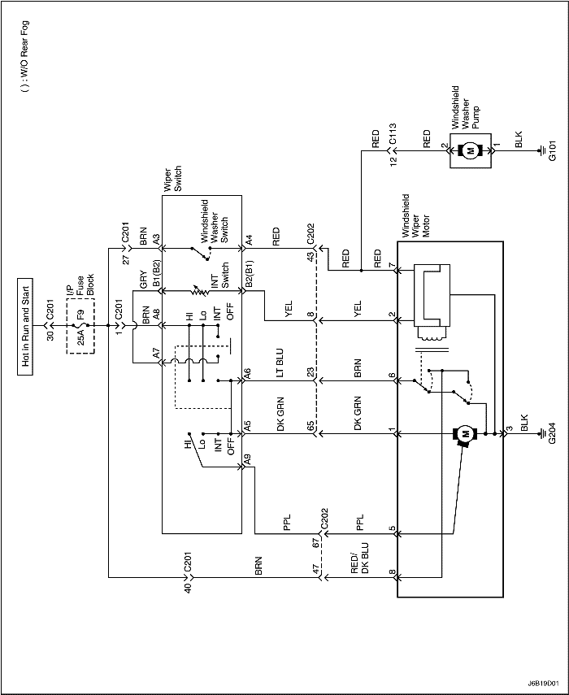


Sistema limpia/lavaparabrisas (sin sensor de lluvia, FATC ni función intermitente trasera: Hatchback)
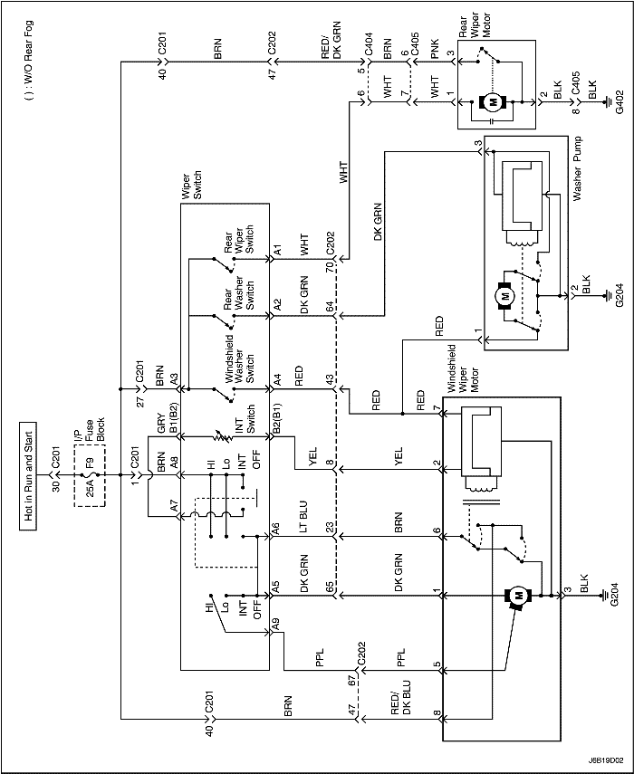
Sistema limpia/lavaparabrisas (sin sensor de lluvia ni FATC y con función intermitente trasera: Hatchback)
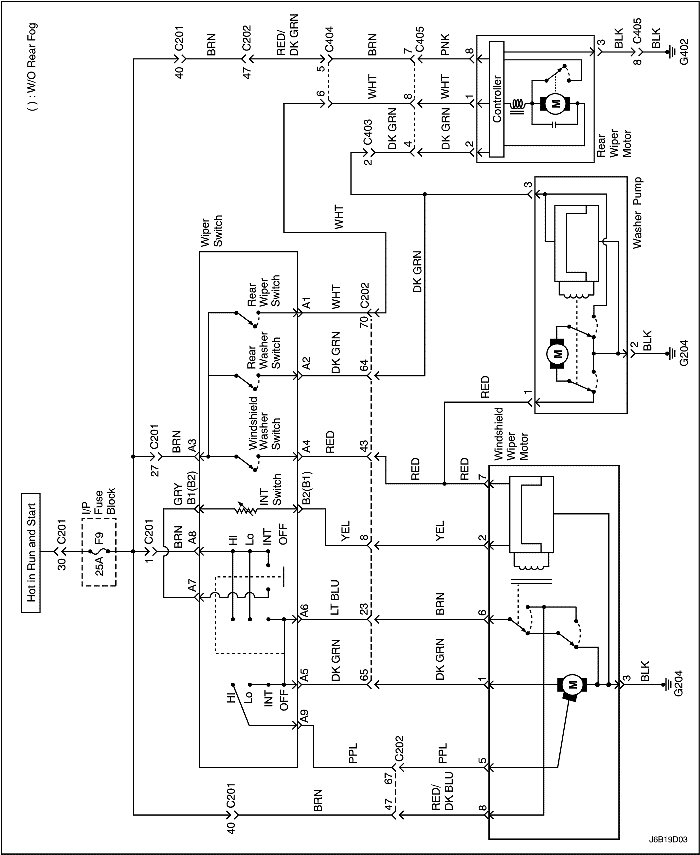
Sistema limpia/lavaparabrisas (sin sensor de lluvia ni FATC: Station Wagon)
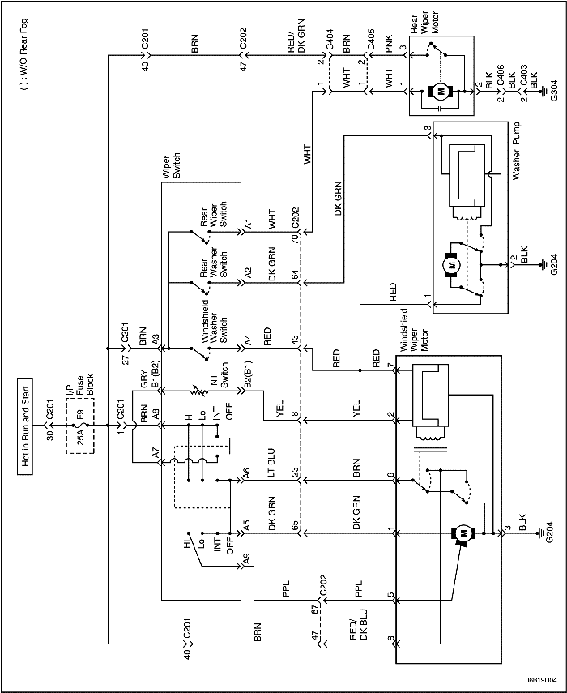
Sistema limpia/lavaparabrisas (sin sensor de lluvia, con FATC: Notchback)
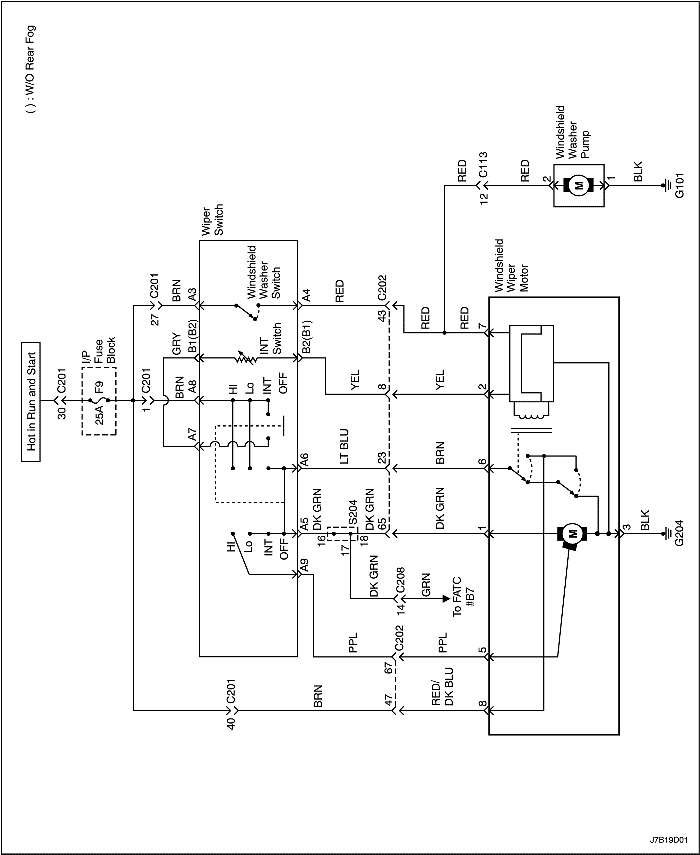
Sistema limpia/lavaparabrisas (sin sensor de lluvia, con FATC y sin función intermitente trasera: Hatchback)
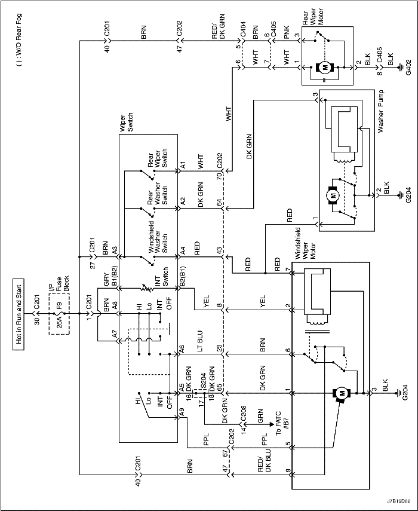
Sistema limpia/lavaparabrisas (sin sensor de lluvia, con FATC y función intermitente trasera: Hatchback)
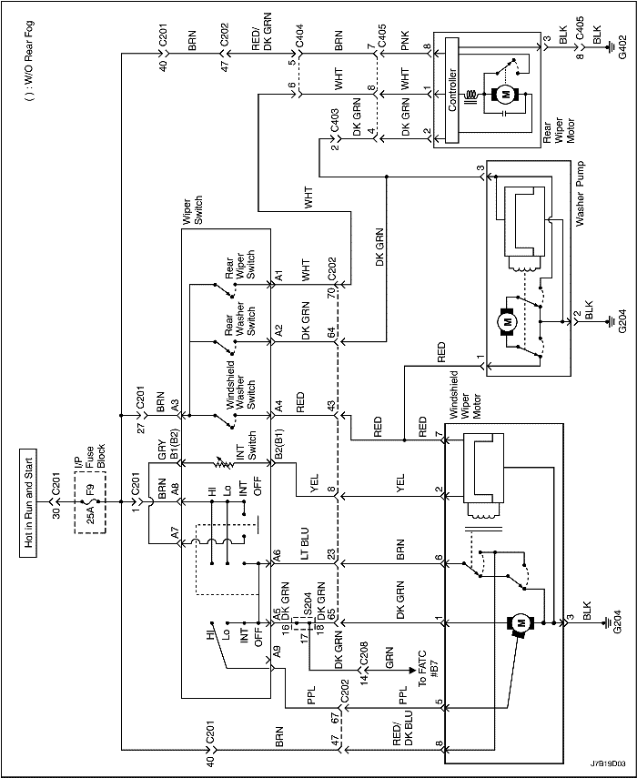
Sistema limpia/lavaparabrisas (sin sensor de lluvia, con FATC: Station Wagon)
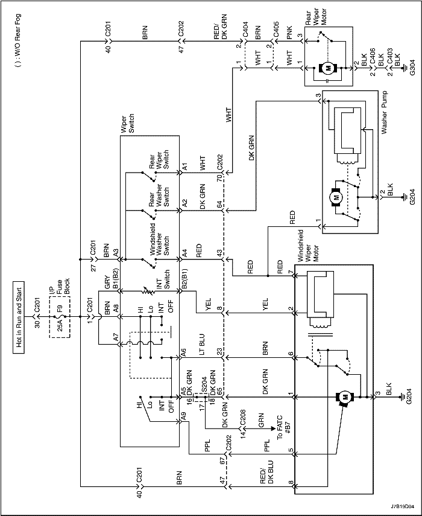
Sistema limpia/lavaparabrisas (con sensor de lluvia, sin FATC: Notchback)
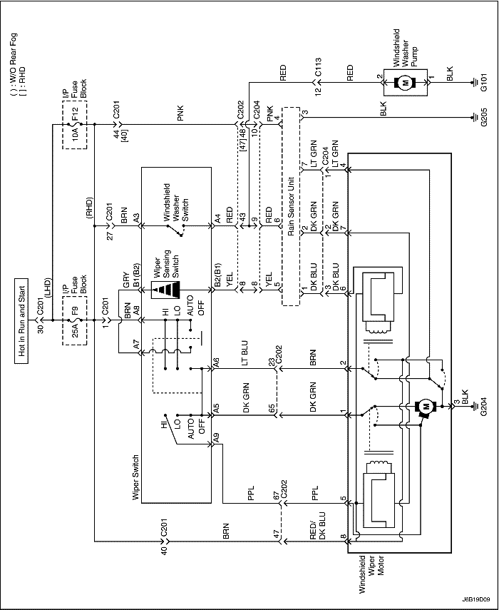
Sistema limpia/lavaparabrisas (con sensor de lluvia, sin FATC ni función intermitente trasera: Hatchback)
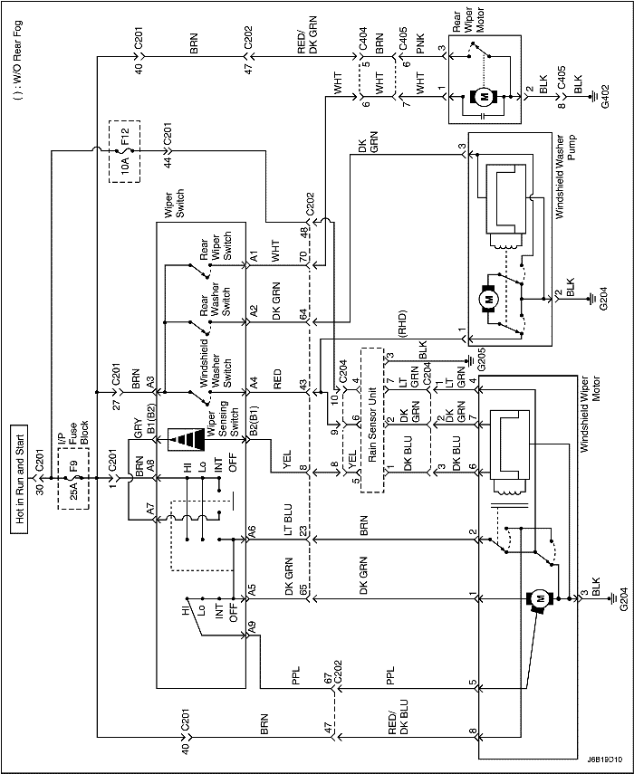
Sistema limpia/lavaparabrisas (con sensor de lluvia, sin FATC y con función intermitente trasera: Hatchback)
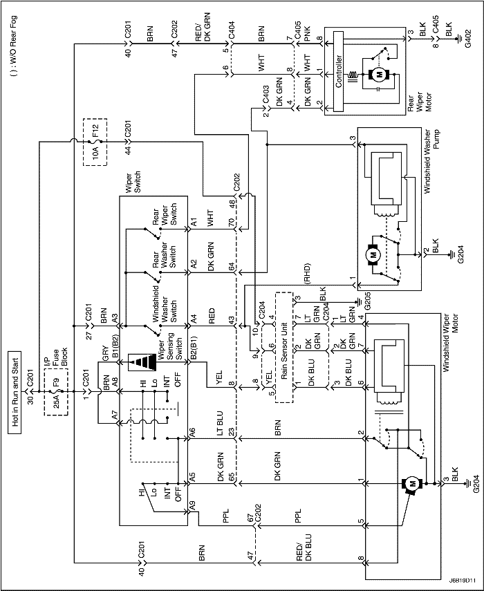
Sistema limpia/lavaparabrisas (con sensor de lluvia, sin FATC: Station Wagon)
Sistema limpia/lavaparabrisas (con sensor de lluvia y FATC: Notchback)
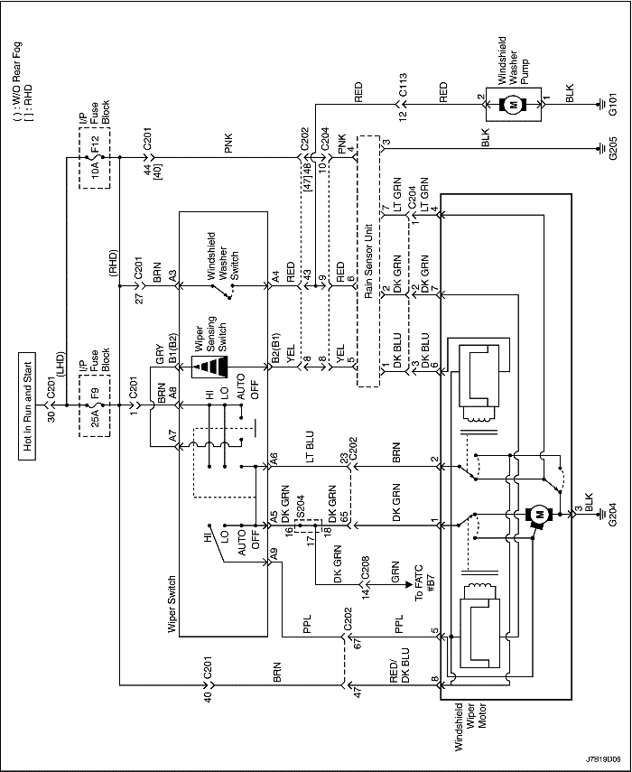
Sistema limpia/lavaparabrisas (con sensor de lluvia y FATC, sin función intermitente trasera: Hatchback)
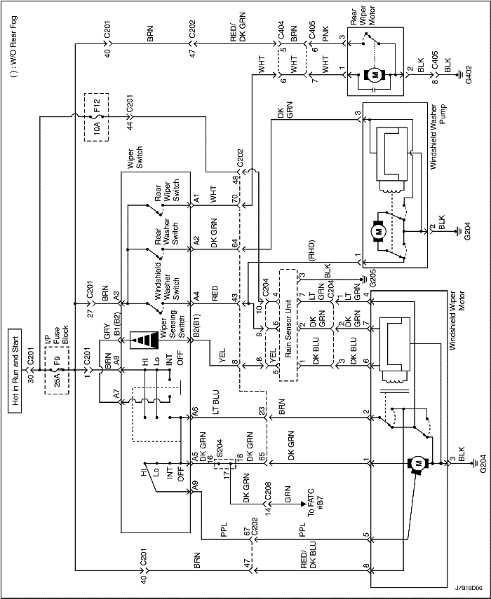
Sistema limpia/lavaparabrisas (con sensor de lluvia, FATC y función intermitente trasera: Hatchback)
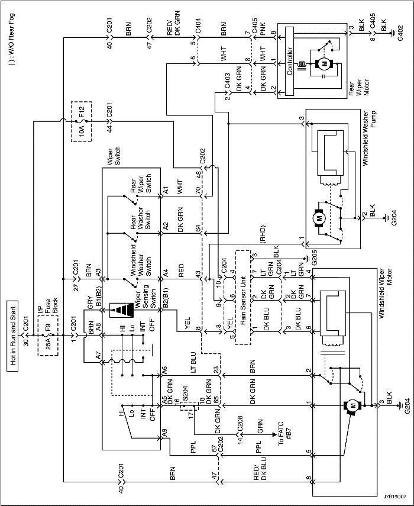
Sistema limpia/lavaparabrisas (con sensor de lluvia y FATC: Station Wagon)
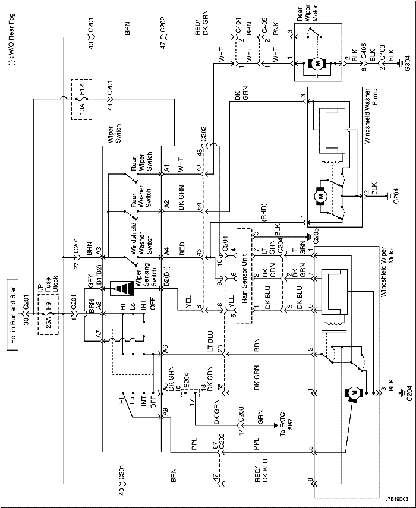
DIAGNÓSTICO
Limpiaparabrisas
Los limpiaparabrisas no funcionan a ninguna velocidad
| Paso | Medida | Valor(es) | Sí | No |
| 1 | Compruebe el fusible F9. ¿Está fundido el fusible F9? | - | Vaya al Paso 2 | Vaya al Paso 3 |
| 2 | - Compruebe si hay algún cortocircuito y repárelo, si fuera necesario.
- Sustituya el fusible.
¿Se ha realizado la reparación? | - | Sistema OK | - |
| 3 | Compruebe la tensión en el fusible F9. ¿El valor de la tensión es el mismo que el especificado? | 11-14 V | Vaya al Paso 5 | Vaya al Paso 4 |
| 4 | Repare el circuito abierto de alimentación de corriente al fusible F9. ¿Se ha realizado la reparación? | - | Sistema OK | - |
| 5 | - Desenchufe el conector del motor del limpiaparabrisas.
- Gire la llave de contacto a la posición ON.
- Gire el interruptor del limpiaparabrisas a la posición HI (alta).
- Compruebe la tensión en el terminal 5 del conector del motor del limpiaparabrisas.
¿El valor de la tensión es el mismo que el especificado? | 11-14 V | Vaya al Paso 6 | Vaya al Paso 7 |
| 6 | Sustituya el motor del limpiaparabrisas. ¿Se ha realizado la reparación? | - | Sistema OK | - |
| 7 | - El interruptor del limpiaparabrisas está aún desconectado.
- Gire la llave de contacto a la posición ON.
- Compruebe la tensión de la batería en el terminal A8 del conector del interruptor del limpiaparabrisas.
¿El valor de la tensión es el mismo que el especificado? | 11-14 V | Vaya al Paso 9 | Vaya al Paso 8 |
| 8 | Repare el circuito abierto entre el terminal A8 del conector del interruptor del limpiaparabrisas y el fusible F9. ¿Se ha realizado la reparación? | - | Sistema OK | - |
| 9 | - El interruptor del limpiaparabrisas está aún desconectado.
- Gire el interruptor del limpiaparabrisas a la posición HI (alta).
- Utilice un ohmímetro para comprobar la continuidad entre los terminales A8 y A9 del interruptor del limpiaparabrisas.
¿Indica el ohmímetro el valor especificado? | ≈ 0 Ω | Vaya al Paso 11 | Vaya al Paso 10 |
| 10 | Sustituya el interruptor del limpiaparabrisas. ¿Se ha realizado la reparación? | - | Sistema OK | - |
| 11 | Repare el circuito abierto entre el interruptor del limpiaparabrisas y el motor del limpiaparabrisas. ¿Se ha realizado la reparación? | - | Sistema OK | - |
Los limpiaparabrisas no funcionan a velocidad rápida, a velocidad lenta funcionan correctamente
| Paso | Medida | Valor(es) | Sí | No |
| 1 | - Gire la llave de contacto a la posición ON.
- Gire el interruptor del limpiaparabrisas a la posición HI (alta).
- Compruebe la tensión en el terminal 5 del conector del motor del limpiaparabrisas.
¿Es la tensión igual al valor especificado? | 11-14 V | Vaya al Paso 2 | Vaya al Paso 3 |
| 2 | Sustituya el motor del limpiaparabrisas. ¿Se ha realizado la reparación? | - | Sistema OK | - |
| 3 | - Desconecte el interruptor del limpiaparabrisas.
- Gire el interruptor del limpiaparabrisas a la posición HI (alta).
- Utilice un ohmímetro para comprobar la continuidad entre los terminales A8 y A9 del interruptor del limpiaparabrisas.
¿Indica el ohmímetro el valor especificado? | ≈ 0 Ω | Vaya al Paso 5 | Vaya al Paso 4 |
| 4 | Sustituya el interruptor del limpiaparabrisas. ¿Se ha realizado la reparación? | - | Sistema OK | - |
| 5 | Repare el circuito abierto entre el terminal A9 del conector del interruptor de limpiaparabrisas y el terminal 5 del conector del motor del limpiaparabrisas. ¿Se ha realizado la reparación? | - | Sistema OK | - |
Los limpiaparabrisas no funcionan a velocidad lenta, a velocidad rápida funcionan correctamente
| Paso | Medida | Valor(es) | Sí | No |
| 1 | - Gire la llave de contacto a la posición ON.
- Gire el interruptor del limpiaparabrisas a la posición LO.
- Compruebe la tensión en el terminal 6 del conector del motor del limpiaparabrisas.
¿El valor de la tensión es el mismo que el especificado? | 11-14 V | Vaya al Paso 2 | Vaya al Paso 3 |
| 2 | Sustituya el motor del limpiaparabrisas. ¿Se ha realizado la reparación? | - | Sistema OK | - |
| 3 | - Desconecte el interruptor del limpiaparabrisas.
- Gire el interruptor del limpiaparabrisas a la posición LO.
- Utilice un ohmímetro para comprobar la continuidad entre los terminales A8 y A5 del interruptor del limpiaparabrisas.
¿Indica el ohmímetro el valor especificado? | ≈ 0 Ω | Vaya al Paso 5 | Vaya al Paso 4 |
| 4 | Sustituya el interruptor del limpiaparabrisas. ¿Se ha realizado la reparación? | - | Sistema OK | - |
| 5 | Repare el circuito abierto entre el terminal A5 del conector del interruptor de limpiaparabrisas y el terminal 5 del conector del motor del limpiaparabrisas. ¿Se ha realizado la reparación? | - | Sistema OK | - |
Los limpiaparabrisas no funcionan intermitentemente; a otras velocidades funcionan correctamente
| Paso | Medida | Valor(es) | Sí | No |
| 1 | - Gire la llave de contacto a la posición ON.
- Gire el interruptor del limpiaparabrisas a la posición INT.
- Compruebe la tensión en el terminal 2 del conector del motor del limpiaparabrisas.
¿El voltímetro indica un valor igual al valor especificado? | 11-14 V | Vaya al Paso 5 | Vaya al Paso 2 |
| 2 | Compruebe si hay algún circuito abierto entre el terminal B2 del conector interruptor del limpiaparabrisas y el terminal 2 del conector del motor del limpiaparabrisas. ¿Hay algún circuito abierto? | - | Vaya al Paso 4 | Vaya al Paso 3 |
| 3 | Sustituya el interruptor del limpiaparabrisas. ¿Se ha realizado la reparación? | - | Sistema OK | - |
| 4 | Repare el circuito abierto entre el terminal B2 del conector del interruptor de limpiaparabrisas y el terminal 2 del conector del motor del limpiaparabrisas. ¿Se ha realizado la reparación? | - | Sistema OK | - |
| 5 | - Gire la llave de contacto a la posición ON.
- Gire el interruptor del limpiaparabrisas a la posición INT.
- Compruebe la tensión pulsatoria en el terminal 6 del conector del motor del limpiaparabrisas.
¿El voltímetro indica una tensión pulsatoria igual al valor especificado? | 11-14 V | Vaya al Paso 7 | Vaya al Paso 6 |
| 6 | Sustituya el motor del limpiaparabrisas. ¿Se ha realizado la reparación? | - | Sistema OK | - |
| 7 | - Llave de contacto en posición ON
- Compruebe la tensión en el terminal A6 del conector del interruptor del limpiaparabrisas.
¿La tensión pulsatoria está en el valor especificado? | 11-14 V | Vaya al Paso 8 | Vaya al Paso 9 |
| 8 | Sustituya el interruptor del limpiaparabrisas. ¿Se ha realizado la reparación? | - | Sistema OK | - |
| 9 | Repare el circuito abierto entre el interruptor del limpiaparabrisas y el motor del limpiaparabrisas. ¿Se ha realizado la reparación? | - | Sistema OK | - |
Los limpiaparabrisas no vuelven a la posición de inmovilización
| Paso | Medida | Valor(es) | Sí | No |
| 1 | - Gire la llave de contacto a la posición ON.
- Compruebe la tensión en el terminal 8 del conector del motor del limpiaparabrisas.
¿El valor de la tensión es el mismo que el especificado? | 11-14 V | Vaya al Paso 3 | Vaya al Paso 2 |
| 2 | Repare el circuito abierto entre el terminal 8 del conector del motor del limpiaparabrisas y el fusible F9. ¿Se ha realizado la reparación? | - | Sistema OK | - |
| 3 | Sustituya el motor del limpiaparabrisas. ¿Se ha realizado la reparación? | - | Sistema OK | - |
Sistema de lavaparabrisas
El lavaparabrisas no funciona, el limpiaparabrisas funciona correctamente
| Paso | Medida | Valor(es) | Sí | No |
| 1 | Active el interruptor del lavaparabrisas. ¿Funcionan los limpiaparabrisas cuando se activa el interruptor del lavaparabrisas? | - | Vaya al Paso 4 | Vaya al Paso 2 |
| 2 | - Gire la llave de contacto a la posición ON.
- Mientras se activa el interruptor del lavaparabrisas, compruebe la tensión en el terminal A4 del conector del interruptor del limpiaparabrisas.
¿Es la tensión igual al valor especificado? | 11-14 V | Vaya al Paso 8 | Vaya al Paso 3 |
| 3 | Sustituya el interruptor del limpiaparabrisas. ¿Se ha realizado la reparación? | - | Sistema OK | - |
| 4 | Compruebe el depósito de líquido del lavaparabrisas. ¿Hay líquido del lavaparabrisas en el depósito? | - | Vaya al Paso 6 | Vaya al Paso 5 |
| 5 | Llene el depósito de líquido del lavaparabrisas. ¿Se ha realizado la reparación? | - | Sistema OK | - |
| 6 | Compruebe los manguitos del lavaparabrisas y las toberas. ¿Están los manguitos y las toberas obstruidos o dañados? | - | Vaya al Paso 7 | Vaya al Paso 8 |
| 7 | Repare los manguitos y las toberas del lavaparabrisas. ¿Se ha realizado la reparación? | - | Sistema OK | - |
| 8 | - Gire la llave de contacto a la posición ON.
- Con el lavaparabrisas conectado, compruebe la tensión en la bomba del lavaparabrisas.
¿El valor de la tensión es el mismo que el especificado? | 11-14 V | Vaya al Paso 10 | Vaya al Paso 9 |
| 9 | Repare el circuito abierto entre la bomba del lavaparabrisas y el interruptor del limpiaparabrisas. ¿Se ha realizado la reparación? | - | Sistema OK | - |
| 10 | Utilice un ohmímetro para medir la resistencia entre masa y el terminal 1 del conector de la bomba del lavaparabrisas. ¿Es igual la resistencia al valor especificado? | ≈ 0 Ω | Vaya al Paso 12 | Vaya al Paso 11 |
| 11 | Repare el circuito de conexión a masa de la bomba del lavaparabrisas. ¿Se ha realizado la reparación? | - | Sistema OK | - |
| 12 | Sustituya la bomba del lavaparabrisas. ¿Se ha realizado la reparación? | - | Sistema OK | - |
Limpiaparabrisas de la luneta trasera (Hatchback, Station Wagon)
Ayudas para el diagnóstico
Si el limpiaparabrisas delantero funciona correctamente, comience con la tabla de diagnóstico en el Paso 5, ya que no hará falta comprobar el fusible o el circuito de alimentación de corriente.
Limpiaparabrisas de la luneta trasera (Hatchback, Station Wagon)
| Paso | Medida | Valor(es) | Sí | No |
| 1 | Compruebe el fusible F9. ¿Está fundido el fusible F9? | - | Vaya al Paso 2 | Vaya al Paso 3 |
| 2 | - Compruebe si hay algún cortocircuito y repárelo si fuera necesario.
- Sustituya el fusible F9.
¿Se ha realizado la reparación? | - | Sistema OK | - |
| 3 | - Gire la llave de contacto a la posición ON.
- Compruebe la tensión en el fusible F9.
¿Es la tensión igual al valor especificado? | 11-14 V | Vaya al Paso 5 | Vaya al Paso 4 |
| 4 | Repare el circuito de alimentación de corriente abierto del fusible F9. ¿Se ha realizado la reparación? | - | Sistema OK | - |
| 5 | - Desenchufe el conector eléctrico del motor del limpiaparabrisas trasero.
- Gire la llave de contacto a la posición ON.
- Compruebe la tensión en el cable rosa del conector eléctrico del motor del limpiaparabrisas trasero.
¿Es la tensión igual al valor especificado? | 11-14 V | Vaya al Paso 7 | Vaya al Paso 6 |
| 6 | Repare el circuito abierto en el cable marrón entre el fusible F9 y el conector en el motor del limpiaparabrisas trasero. ¿Se ha realizado la reparación? | - | Sistema OK | - |
| 7 | Con el motor del limpiaparabrisas todavía desconectado, use un ohmímetro para comprobar la continuidad entre masa y el cable NGR del conector del motor del limpiaparabrisas trasero. ¿Indica el ohmímetro el valor especificado? | ≈ 0 Ω | Vaya al Paso 9 | Vaya al Paso 8 |
| 8 | Repare el circuito de conexión a masa abierto del motor del limpiaparabrisas trasero. ¿Se ha realizado la reparación? | - | Sistema OK | - |
| 9 | - Gire la llave de contacto a la posición ON.
- Encienda el limpiaparabrisas trasero.
- Compruebe la tensión en el cable blanco del conector del motor del limpiaparabrisas trasero.
¿Indica el voltímetro el valor especificado? | 11-14 V | Vaya al Paso 10 | Vaya al Paso 11 |
| 10 | Sustituya el motor del limpiaparabrisas trasero. ¿Se ha realizado la reparación? | - | Sistema OK | - |
| 11 | - Desenchufe el conector eléctrico del interruptor del limpiaparabrisas.
- Gire la llave de contacto a la posición ON.
- Compruebe la tensión en el terminal A3 (marrón).
¿El valor de la tensión es el mismo que el especificado? | 11-14 V | Vaya al Paso 13 | Vaya al Paso 12 |
| 12 | Repare el circuito abierto entre el fusible F9 y el terminal A3 del conector del interruptor del limpiaparabrisas. ¿Se ha realizado la reparación? | - | Sistema OK | - |
| 13 | - Conecte un ohmímetro entre los terminales A1 y A3 del interruptor del limpiaparabrisas.
- Observe el ohmímetro al poner el interruptor del limpiaparabrisas trasero en la posición WIPE (limpieza).
¿Indica el ohmímetro el valor especificado? | ≈ 0 Ω | Vaya al Paso 14 | Vaya al Paso 15 |
| 14 | Repare el circuito abierto entre el terminal A1 del conector del limpiaparabrisas (cable blanco) y el motor del limpiaparabrisas trasero. ¿Se ha realizado la reparación? | - | Sistema OK | - |
| 15 | Sustituya el interruptor del limpiaparabrisas. ¿Se ha realizado la reparación? | - | Sistema OK | - |
Sistema limpia/lavaparabrisas de la luneta trasera (Hatchback, Station Wagon)
| Paso | Medida | Valor(es) | Sí | No |
| 1 | Compruebe el nivel de líquido del lavaparabrisas. ¿Hay suficiente líquido en el depósito? | - | Vaya al Paso 3 | Vaya al Paso 2 |
| 2 | Llene el depósito. ¿Se ha realizado la reparación? | - | Sistema OK | - |
| 3 | Verifique que los manguitos no estén obstruidos ni tengan fugas, para ello desconecte el manguito del lavaparabrisas y sople por él hacia el depósito y la tobera. ¿Están los manguitos obstruidos o tienen fugas? | - | Vaya al Paso 4 | Vaya al Paso 5 |
| 4 | Repare o sustituya los manguitos. ¿Se ha realizado la reparación? | - | Sistema OK | - |
| 5 | Compruebe el funcionamiento limpiaparabrisas de la luneta trasera. ¿Funciona correctamente el limpiaparabrisas trasero? | - | Vaya al Paso 7 | Vaya al Paso 6 |
| 6 | Repare el limpiaparabrisas trasero. ¿Se ha realizado la reparación del limpiaparabrisas trasero? | - | Vaya al Paso 7 | - |
| 7 | - Desenchufe el conector eléctrico en la bomba del lavaparabrisas.
- Compruebe con un ohmímetro la continuidad entre el cable negro del conector de la bomba del lavaparabrisas y masa.
¿Indica el ohmímetro el valor especificado? | ≈ 0 Ω | Vaya al Paso 9 | Vaya al Paso 8 |
| 8 | Repare la interrupción o la alta resistencia en la conexión a masa. ¿Se ha realizado la reparación? | - | Sistema OK | - |
| 9 | Compruebe la tensión en el conector de la bomba del lavaparabrisas trasero (cable rojo claro) cuando se encienda el lavaparabrisas de la luneta trasera. ¿El valor de la tensión es el mismo que el especificado? | 11-14 V | Vaya al Paso 10 | Vaya al Paso 11 |
| 10 | Sustituya la bomba del lavaparabrisas. ¿Se ha realizado la reparación? | - | Sistema OK | - |
| 11 | - Desconecte el interruptor del limpiaparabrisas.
- Conecte un ohmímetro entre los terminales 3 y A2 del interruptor del limpiaparabrisas.
- Observe el ohmímetro al poner el interruptor en la posición WASH (lavado).
¿Indica el ohmímetro el valor especificado? | ≈ 0 Ω | Vaya al Paso 12 | Vaya al Paso 13 |
| 12 | Repare el circuito abierto entre el terminal A2 del conector del interruptor del limpiaparabrisas y la bomba del lavaparabrisas trasero. ¿Se ha realizado la reparación? | - | Sistema OK | - |
| 13 | Sustituya el interruptor del limpiaparabrisas. ¿Se ha realizado la reparación? | - | Sistema OK | - |
MANTENIMIENTO Y REPARACIÓN
servicio con vehículo en marcha
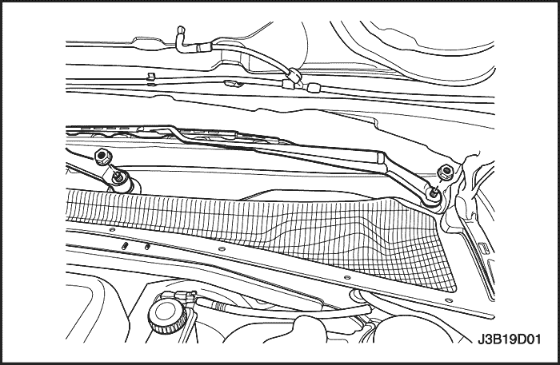
Brazo del limpiaparabrisas
(Indicado para conducción a izquierdas, conducción a derechas similar)
Procedimiento de desmontaje
- Abra el capó.
- Si fuera necesario, quite la tapa que cubre la tuerca del brazo limpiaparabrisas.
- Quite la tuerca del brazo limpiaparabrisas.
- Tire del brazo para retirarlo.
procedimiento de montaje
- Monte el brazo limpiaparabrisas.
Aviso: Metales distintos en contacto directo pueden corroerse rápidamente. Asegúrese de utilizar los elementos de sujeción correctos para evitar una corrosión prematura.
- Sujete el brazo limpiaparabrisas con su tuerca.
Apretar
Apriete la tuerca del brazo limpiaparabrisas hasta 22 N•m (16 lb-pie).
- Si fuera necesario, coloque la tapa de la tuerca del brazo limpiaparabrisas.
- Cierre el capó.
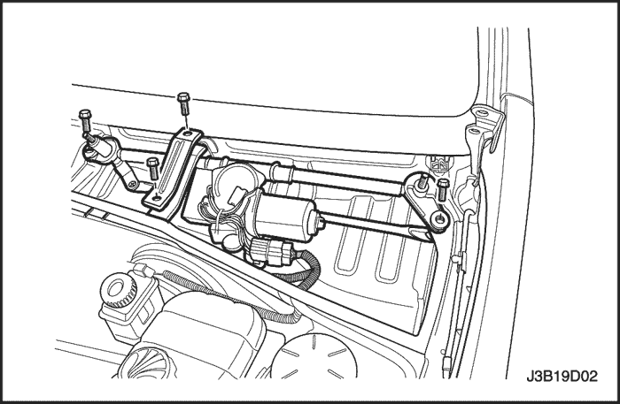
Motor del limpiaparabrisas
(Indicado para conducción a izquierdas, conducción a derechas similar)
Procedimiento de desmontaje
- Desconecte el cable negativo de la batería.
- Retire la parte izquierda de la rejilla de ventilación del capó. Consulte la Sección 9R, Parte delantera de la carrocería.
- Quite la tuerca y la arandela que sujetan el varillaje del brazo limpiaparabrisas al eje de accionamiento del motor.
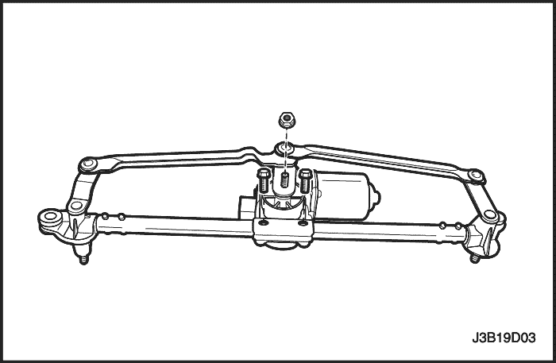
- Desmonte, haciendo palanca, el varillaje del brazo limpiaparabrisas del eje de accionamiento del motor.
- Quite las tuercas.
- Desenchufe el conector eléctrico.
- Quite los tornillos y desmonte el motor del limpiaparabrisas.
procedimiento de montaje
Aviso: Metales distintos en contacto directo pueden corroerse rápidamente. Asegúrese de utilizar los elementos de sujeción correctos para evitar una corrosión prematura.
- Monte el motor del limpiaparabrisas con sus tornillos.
Apretar
Apriete los tornillos del motor del limpiaparabrisas hasta 8 N•m (71 lb-pulg.).
- Enchufe el conector eléctrico.
- Presione el varillaje del brazo limpiaparabrisas sobre el eje de accionamiento del motor.
- Monte el varillaje del brazo limpiaparabrisas en el eje de accionamiento del motor con su tuerca y su arandela.
Apretar
Apriete la tuerca del varillaje del brazo limpiaparabrisas hasta 5 N•m (44 lb-pulg.).
- Coloque la parte izquierda de la rejilla de ventilación del capó. Consulte la Sección 9R, Parte delantera de la carrocería.
- Conecte el cable negativo de la batería.
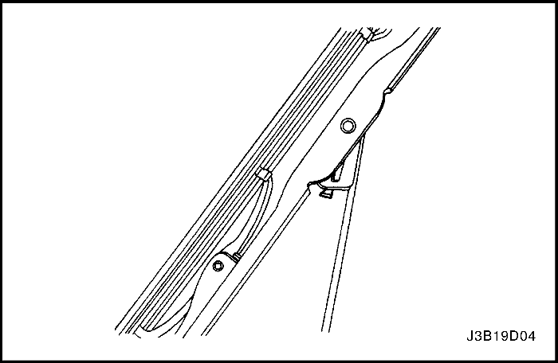
Escobilla del limpiaparabrisas
(característico)
Procedimiento de desmontaje
- Gire la escobilla del limpiaparabrisas en el brazo.
- Mientras presiona el clip de retención, deslice la escobilla del limpiaparabrisas por el brazo hacia abajo y retírela.
procedimiento de montaje
- Monte la escobilla del limpiaparabrisas deslizándola en el brazo hasta que encaje el clip de retención.
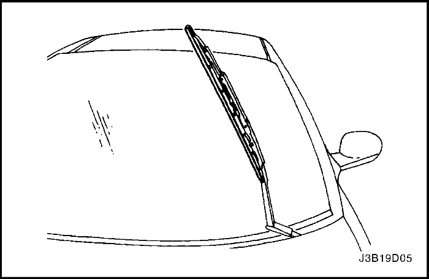
Enganche de escobilla de limpiaparabrisas
(Se muestra la parte delantera, la parte trasera es similar)
Procedimiento de desmontaje
- Deslice el inserto fuera de la escobilla del limpiaparabrisas.
procedimiento de montaje
- Deslice el inserto dentro de la escobilla del limpiaparabrisas.
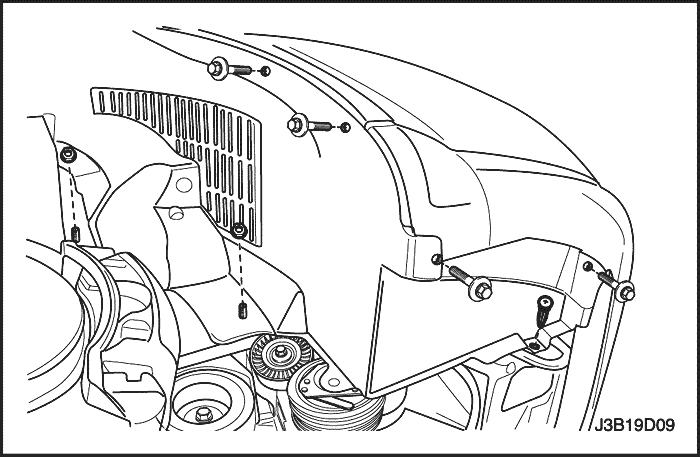
Depósito de lavaparabrisas
(característico)
Procedimiento de desmontaje
- Desconecte el cable negativo de la batería.
- Desmonte la rueda delantera izquierda. Consulte la Sección 2E, Neumáticos y ruedas.
- Quite los tornillos y pernos y desmonte la chapa guardabarros del paso de rueda delantera.
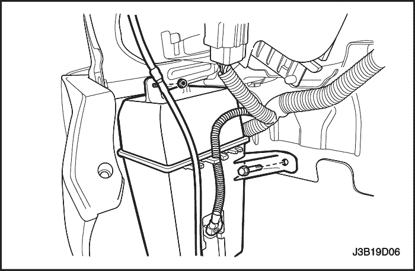
- Desconecte el manguito del lavaparabrisas de la bomba.
- Desenchufe el conector eléctrico de la bomba del depósito.
- Quite los tornillos y desmonte el depósito.
procedimiento de montaje
Aviso: Metales distintos en contacto directo pueden corroerse rápidamente. Asegúrese de utilizar los elementos de sujeción correctos para evitar una corrosión prematura.
- Monte el depósito con sus tornillos.
Apretar
Apriete los tornillos del depósito de líquido del lavaparabrisas hasta 8 N•m (71 lb-pulg.).
- Enchufe el conector eléctrico de la bomba del depósito.
- Conecte el manguito a la bomba del lavaparabrisas.
- Monte la chapa guardabarros del paso de rueda delantera con sus tornillos.
Apretar
Apriete los tornillos de la chapa guardabarros del paso de rueda delantera hasta 1,5 N•m (13 lb-pulg.).
- Monte la rueda delantera izquierda. Consulte la Sección 2E, Neumáticos y ruedas.
- Conecte el cable negativo de la batería.
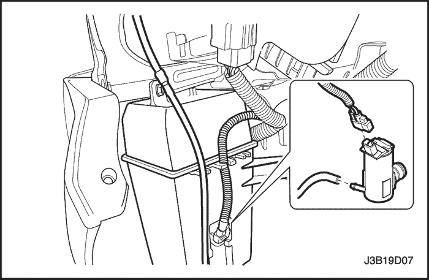
Bomba(s) de limpiaparabrisas
(característico)
Procedimiento de desmontaje
- Desconecte el cable negativo de la batería.
- Desmonte la rueda delantera izquierda. Consulte la Sección 2E, Neumáticos y ruedas.
- Quite los tornillos y pernos y desmonte la chapa guardabarros del paso de rueda delantera.
- Desenchufe el conector eléctrico.
- Desconecte el manguito del lavaparabrisas de la bomba.
- Desmonte la bomba del lavaparabrisas.
procedimiento de montaje
- Monte la bomba del lavaparabrisas.
- Conecte el manguito a la bomba del lavaparabrisas.
- Enchufe el conector eléctrico.
Aviso: Metales distintos en contacto directo pueden corroerse rápidamente. Asegúrese de utilizar los elementos de sujeción correctos para evitar una corrosión prematura.
- Monte la chapa guardabarros del paso de rueda delantera con sus tornillos.
Apretar
Apriete los tornillos de la chapa guardabarros del paso de rueda delantera hasta 1,5 N•m (13 lb-pulg.).
- Monte la rueda delantera izquierda. Consulte la Sección 2E, Neumáticos y ruedas.
- Conecte el cable negativo de la batería.
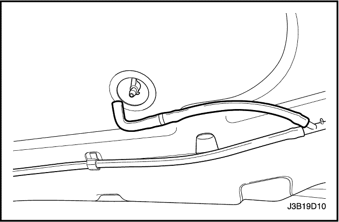
Boquillas de lavaparabrisas
Procedimiento de desmontaje
- Desconecte el manguito del lavaparabrisas de la tobera.
- Desmonte la tobera del capó.
procedimiento de montaje
- Monte la tobera en el capó.
- Conecte el manguito del lavaparabrisas en la tobera.
Mangueras de lavaparabrisas
(característico)
Procedimiento de desmontaje
- Desconecte el manguito de las toberas del lavaparabrisas.
- Desmonte la rueda delantera izquierda. Consulte la Sección 2E, Neumáticos y ruedas.
- Quite los tornillos y pernos y desmonte la chapa guardabarros del paso de rueda delantera.
- Desconecte el manguito del depósito del lavaparabrisas.
- Retire el manguito del lavaparabrisas.
procedimiento de montaje
- Ponga el manguito del lavaparabrisas.
- Conecte el manguito a la bomba del lavaparabrisas.
Aviso: Metales distintos en contacto directo pueden corroerse rápidamente. Asegúrese de utilizar los elementos de sujeción correctos para evitar una corrosión prematura.
- Monte la chapa guardabarros del paso de rueda delantera con sus tornillos.
Apretar
Apriete los tornillos de la chapa guardabarros del paso de rueda hasta 1,5 N•m (13 lb-pulg.).
- Monte la rueda delantera izquierda. Consulte la Sección 2E, Neumáticos y ruedas.
- Conecte el manguito a las toberas del lavaparabrisas.
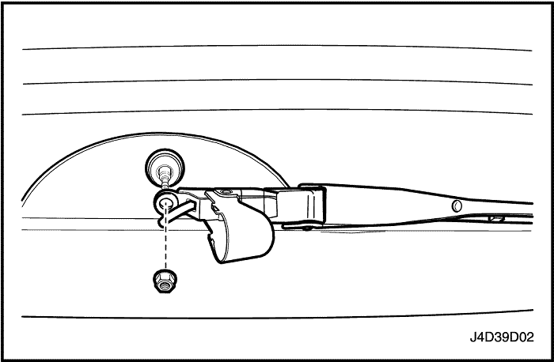
Brazo limpiaparabrisas de la luneta trasera (Hatchback)
Procedimiento de desmontaje
- Abra el tapón de acceso del brazo limpiaparabrisas.
- Quite la tuerca y desmonte el brazo limpiaparabrisas trasero.
procedimiento de montaje
Aviso: Metales distintos en contacto directo pueden corroerse rápidamente. Asegúrese de utilizar los elementos de sujeción correctos para evitar una corrosión prematura.
- Monte el brazo limpiaparabrisas de la luneta trasera con su tuerca.
Apretar
Apriete la tuerca del brazo limpiaparabrisas hasta 11 N•m (97 lb-pulg.).
- Cierre el tapón de acceso del brazo limpiaparabrisas.
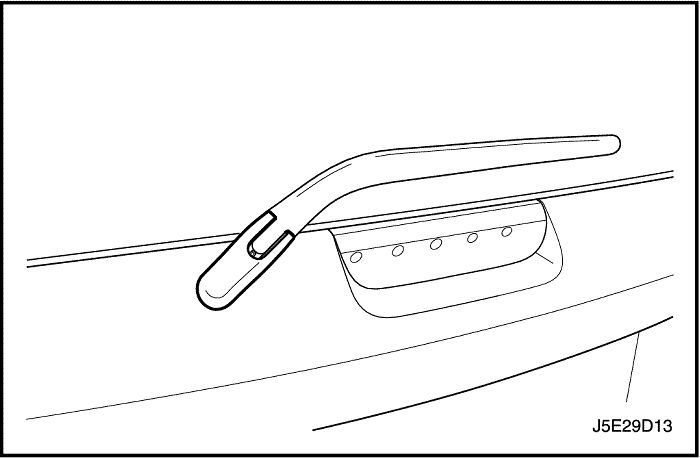
Brazo limpiaparabrisas de la luneta trasera (Station Wagon)
Procedimiento de desmontaje
- Abra el tapón de acceso del brazo limpiaparabrisas.
- Quite la tuerca y desmonte el brazo limpiaparabrisas trasero.
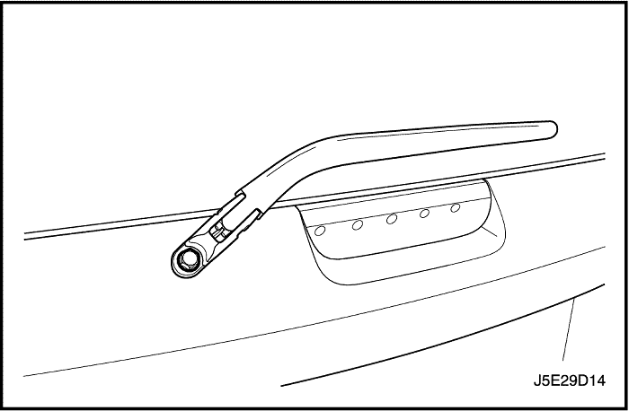
procedimiento de montaje
Aviso: Metales distintos en contacto directo pueden corroerse rápidamente. Asegúrese de utilizar los elementos de sujeción correctos para evitar una corrosión prematura.
- Monte el brazo limpiaparabrisas de la luneta trasera con su tuerca.
Apretar
Apriete la tuerca del brazo limpiaparabrisas hasta 11 N•m (97 lb-pulg.).
- Cierre el tapón de acceso del brazo limpiaparabrisas.
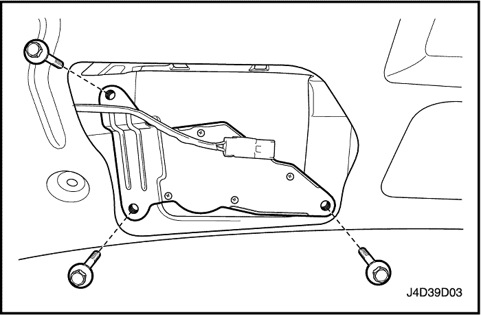
Motor del limpiaparabrisas de la luneta trasera (Hatchback)
Procedimiento de desmontaje
- Desconecte el cable negativo de la batería.
- Desmonte el brazo limpiaparabrisas de la luneta trasera. Consulte el apartado "Brazo limpiaparabrisas de la luneta trasera" de esta sección.
- Desmonte la moldura embellecedora inferior del portón trasero. Consulte la Sección 9G, Guarnecido interior.
- Quite los tornillos y desmonte el motor del limpiaparabrisas trasero.
- Desenchufe el conector eléctrico.

procedimiento de montaje
- Enchufe el conector eléctrico.
Aviso: Metales distintos en contacto directo pueden corroerse rápidamente. Asegúrese de utilizar los elementos de sujeción correctos para evitar una corrosión prematura.
- Monte el motor del limpiaparabrisas trasero con sus tornillos.
Apretar
Apriete los tornillos del motor del limpiaparabrisas hasta 9 N•m (80 lb-pulg.).
- Monte la moldura embellecedora inferior del portón trasero. Consulte la Sección 9G, Guarnecido interior.
- Monte el brazo limpiaparabrisas de la luneta trasera. Consulte el apartado "Brazo limpiaparabrisas de la luneta trasera" de esta sección.
- Conecte el cable negativo de la batería.
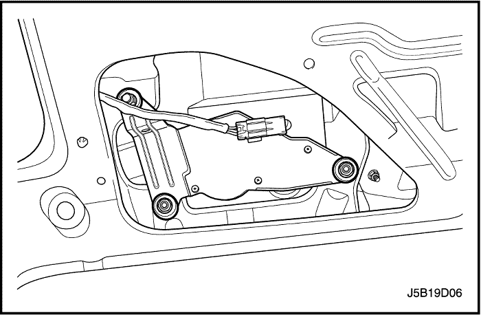
Motor del limpiaparabrisas de la luneta trasera (Station Wagon)
Procedimiento de desmontaje
- Desconecte el cable negativo de la batería.
- Desmonte el brazo limpiaparabrisas de la luneta trasera. Consulte el apartado "Brazo limpiaparabrisas de la luneta trasera" de esta sección.
- Desmonte la cubierta de guarnecido de la puerta del station wagon. Consulte la Sección 9G, Guarnecido interior.
- Quite los tornillos y desmonte el motor del limpiaparabrisas trasero.
- Desenchufe el conector eléctrico.
procedimiento de montaje
- Enchufe el conector eléctrico.
Aviso: Metales distintos en contacto directo pueden corroerse rápidamente. Asegúrese de utilizar los elementos de sujeción correctos para evitar una corrosión prematura.
- Monte el motor del limpiaparabrisas trasero con sus tornillos.
Apretar
Apriete los tornillos del motor del limpiaparabrisas hasta 9 N•m (80 lb-pulg.).
- Monte la cubierta de guarnecido de la puerta del station wagon. Consulte la Sección 9G, Guarnecido interior.
- Monte el brazo limpiaparabrisas de la luneta trasera. Consulte el apartado "Brazo limpiaparabrisas de la luneta trasera" de esta sección.
- Conecte el cable negativo de la batería.
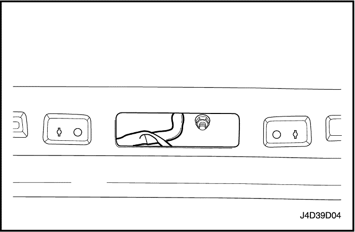
Tobera del limpiaparabrisas de la luneta trasera (Hatchback)
Procedimiento de desmontaje
- Desmonte la moldura embellecedora inferior de la puerta del hatchback. Consulte la Sección 9G, Guarnecido interior.
- Retire el manguito del lavaparabrisas de la tobera.
- Desmonte la tobera del lavaparabrisas.
procedimiento de montaje
- Monte la tobera del lavaparabrisas.
- Instale el manguito del lavaparabrisas en la tobera.
- Monte la moldura embellecedora inferior del hatchback. Consulte la Sección 9G, Guarnecido interior.
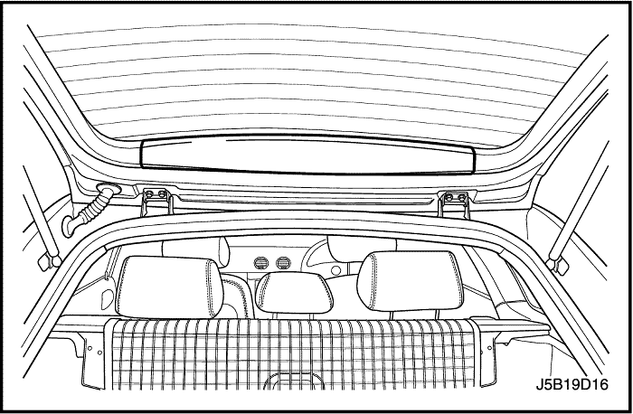
Tobera del limpiaparabrisas de la luneta trasera (Station Wagon)
Procedimiento de desmontaje
- Desmonte la moldura embellecedora inferior del station wagon. Consulte la Sección 9G, Guarnecido interior.
- Retire el manguito del lavaparabrisas de la tobera.
- Desmonte la tobera del lavaparabrisas.
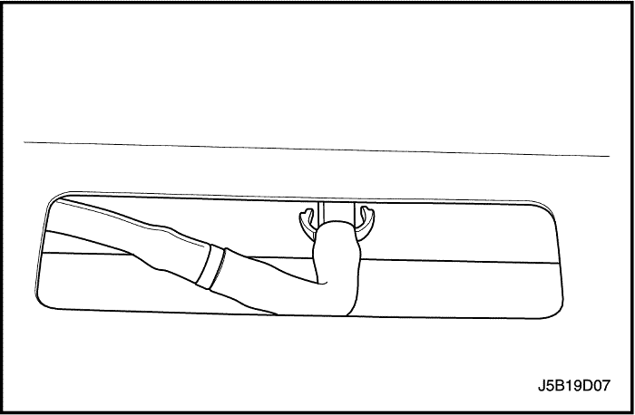
procedimiento de montaje
- Monte la tobera del lavaparabrisas.
- Instale el manguito del lavaparabrisas en la tobera.
- Monte la moldura embellecedora inferior del station wagon. Consulte la Sección 9G, Guarnecido interior.
DESCRIPCIÓN GENERAL Y FUNCIONAMIENTO DEL SISTEMA
Sistema de limpiaparabrisas
El sistema limpiaparabrisas está formado por un motor, un varillaje, un brazo y una escobilla y un interruptor del limpia/lavaparabrisas. El circuito del limpiaparabrisas incorpora un dispositivo automático de inmovilización formado por un engranaje de tornillo sin fin y un plato excéntrico para mantener el circuito engranado temporalmente cuando se apague el interruptor. El sistema del limpiaparabrisas está accionado por un motor de imanes permanentes. El motor del limpiaparabrisas va montado en el tablero y está conectado directamente al varillaje del limpiaparabrisas.
Este motor dispone de dos velocidades, LO y HI (Baja y Alta), así como la posibilidad de un funcionamiento intermitente del brazo. El interruptor del limpiaparabrisas es parte integral del interruptor del sistema limpia/lavaparabrisas. El limpiaparabrisas se acciona a través de la palanca situada en el lado derecho de la columna de dirección.
Sistema de lavaparabrisas
El sistema lavaparabrisas está equipado con un depósito de líquido de lavado, una bomba, manguitos, toberas y un interruptor del limpia/lavaparabrisas. El depósito va montado detrás de la chapa guardabarros del paso de rueda delantero izquierdo. Una bomba fijada al depósito bombea el líquido a través de los manguitos a las dos toberas montadas en el capó. El interruptor del lavaparabrisas es parte integral del interruptor del sistema limpia/lavaparabrisas. El lavaparabrisas se acciona a través de la palanca situada en el lado derecho de la columna de dirección.
Limparabrisas de luneta trasera/Sistema de lavado
El sistema limpiaparabrisas de la luneta trasera está formado por un motor, un brazo y una escobilla. El motor del sistema limpiaparabrisas de la luneta trasera se encuentra dentro del portón trasero y está directamente conectado al limpiaparabrisas de la luneta trasera. El sistema de lavaparabrisas de la luneta trasera dispone de una bomba de líquido de lavaparabrisas independiente y un manguito. El modelo hatchback dispone de una tobera de lavaparabrisas para la luneta trasera montada en el portón trasero. Esta tobera de lavaparabrisas va incorporada en el motor del limpiaparabrisas trasero. El depósito del lavaparabrisas de la luneta trasera está situado detrás de la chapa guardabarros del paso de rueda delantero izquierdo. Unido a este depósito está la bomba del lavaparabrisas que bombea líquido a través de un manguito a la tobera del lavaparabrisas de la luneta trasera.